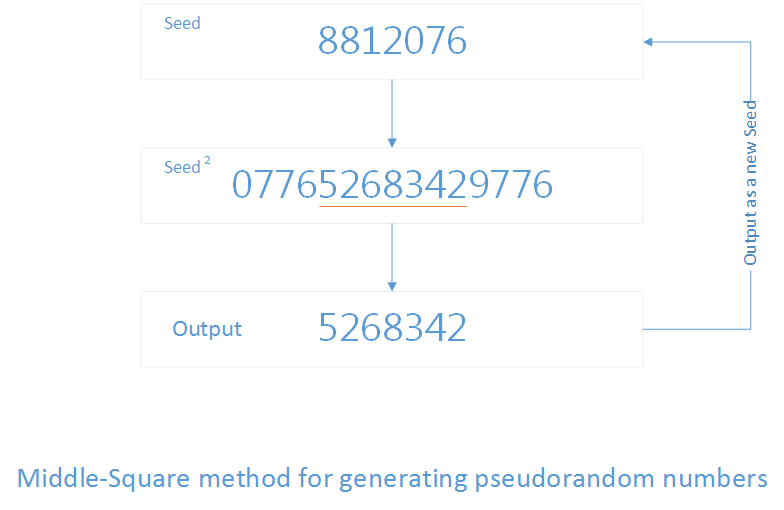

تولید اعداد تصادفی به روش میان مربعی
Pseudorandom number generator algorithms
در ریاضیات؛ میان مربع یک روش تولید عدد شبه تصادفی است که در عمل روشی چندان خوبی نیست؛ زیرا طول دوره آن بسیار کوتاه است و همچنین ضعفهای فلج کنندهایی دارد؛ به عنوان مثال خروجی دنباله در اکثر مواقع به عدد صفر همگرا است. این روش برای اولین بار در یک مقاله دستنویس توسط راهب صومعه Franciscan (به نام Brother Edvin شناخته میشد) زمانی بین 1240 تا 1250 میلادی شرح داده شد. این روش در سال 1949 توسط جان جان فون نویمان دوباره اختراع! شد.
عددی n رقمی را به عنوان هسته در نظر بگیرید به طور مثال 8812076؛ این عدد را در خودش ضرب کرده و n رقم میانی حاصل ضرب را بدست آورید
\begin{align} \ 8812076*8812076 = 077652683429776 \\ \end{align}
در این مثال، هفت رقم وسط برابر با 5268342 میباشد. عدد تولیدی اولین عدد تصادفی است. برای ادامه عدد بدست آمده را به عنوان هسته جدید در نظر گرفته و مراحل کار را ادامه دهید.

نوشته شده در اردی بهشت 1392 توسط محمدرضا تأثیری